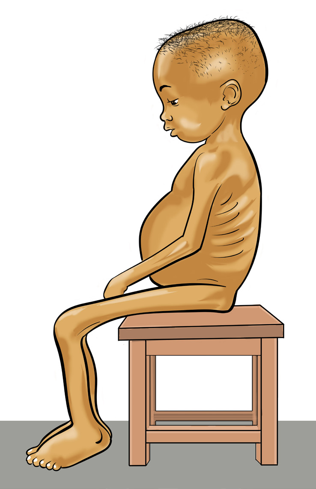

Food and Human Nutrition
Form Two
child with acute malnutrition with and without oedema.

Figure 3.3: A child with acute malnutrition with and without oedema
Activity 3.1
Identifying children with malnutrition
Visit a Reproductive and Child
Health (RCH) Clinic or hospital.
(i) Observe children with malnutrition.
(ii) Differentiate signs and symptoms of children with acute malnutrition with oedema and children with acute malnutrition without oedema.
Exercise 3.1
1. Discuss reasons which make children under five years to be more vulnerable to under-nutrition than adults.
2. What causes malnourished children to have swollen bellies?
b) Stunting
Stunting refers to a low height-for-age in children and it indicates long-term undernutrition. It is also known as chronic malnutrition. This condition occurs due to inadequate nutrient intake and repeated illness over an extended period. A stunted child is shorter than other children of the same age (measured as low height for age). This condition can develop when a pregnant woman does not receive adequate nutrients during pregnancy resulting in irreversible effects on the cognitive and physical development of the foetus. Major causes of stunting include inappropriate breastfeeding and feeding practices, inadequate care and frequent illnesses at the age from birth to two years.
Stunting also results from recurrent under-nutrition, poor maternal health and nutrition, inadequate psychosocial stimulation and poor parent-infant bonding. Additionally, a stunted child is at higher risk of developing obesity and non-communicable diseases later in life.